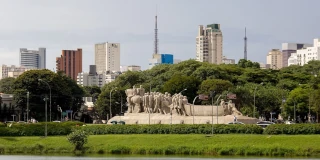
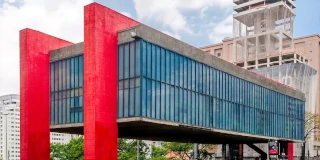

São Paulo
São Paulo
23.5505° S, 46.6333° W

São Paulo, Brasil
São Paulo, Brazil
Photograph by
Mike Peel
(
www.mikepeel.net
).,
CC BY-SA 4.0
,
Link

Museu de Arte de São Paulo
São Paulo Museum of Art
The Photographer
-
Own work
,
CC0
,
Link